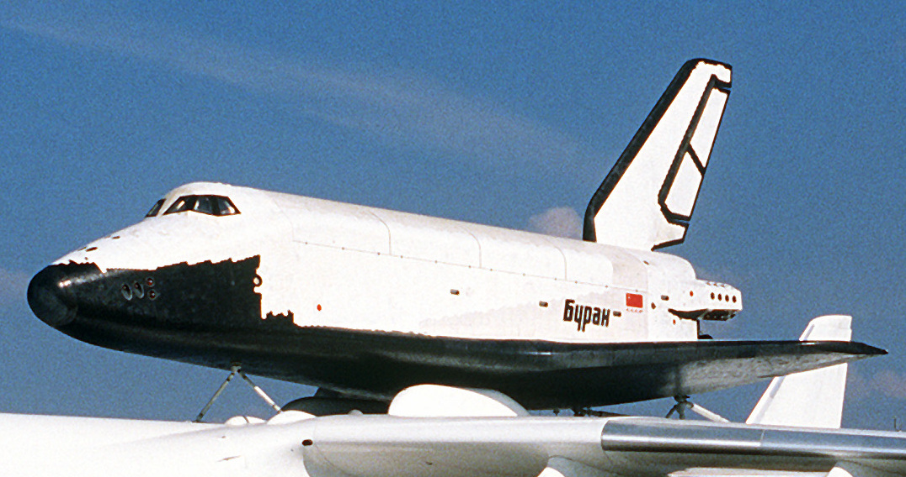

15 ноября 1988 года состоялся первый и единственный космический полёт «Бурана». Ракета-носитель «Энергия», стартовавшая с площадки 110 космодрома Байконур вывела корабль на околоземную орбиту. Полёт длился 205 минут, за это время корабль совершил два витка вокруг Земли, после чего произвёл посадку на аэродроме «Юбилейный» космодрома Байконур. Полёт происходил в автоматическом режиме с использованием бортового компьютера и бортового программного обеспечения.
- Длина - 36.37 м;
- Ширина - 23.92 м;
- Высота - 19 м;
